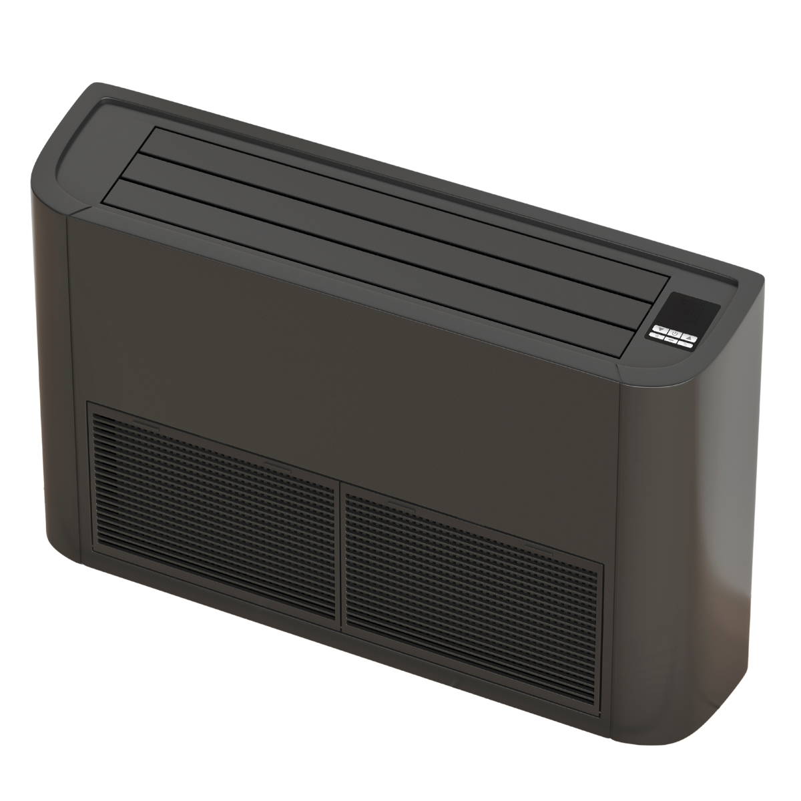
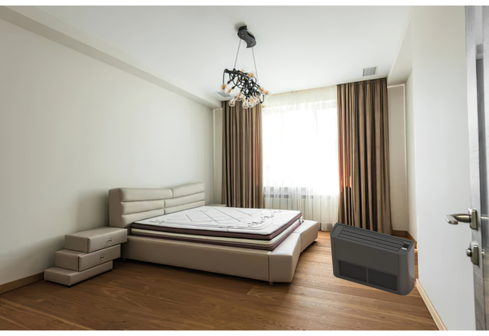

Portable Space Heater
ComfortHeat Model T20
A portable space heater designed to provide adjustable supplementary heating with a maximum output of 2,000 watts.
- Maximum heating output of 2,000 W
- Three selectable heat levels
- Includes a 24-hour timer
Home Heating

ComfortHeat Space HeaterModel T20
Adjustable everyday warmth
Designed for straightforward supplementary heating
ThermaNest ComfortHeat T20 is a portable space heater with a maximum heating output of 2,000 watts.
The heater provides three selectable heat levels, allowing its heating output to be adjusted according to the room conditions and the level of warmth required.
ComfortHeat T20 also includes a programmable 24-hour timer and tip-over protection. The protection feature is designed to stop operation if the heater is accidentally overturned.
Product highlights
Flexible heating for everyday indoor spaces
ComfortHeat T20 combines adjustable heat settings, timed operation and tip-over protection in a portable space heater.
2,000-watt maximum output
The highest heat setting provides a maximum heating output of 2,000 watts.
Three heat levels
Select from three heat levels to adjust the heater’s output for different indoor conditions.
24-hour timer
The integrated timer supports scheduled operation for a period of up to 24 hours.
Tip-over protection
The heater is designed to stop operating if it is accidentally knocked over during use.
Portable indoor heating
The compact format supports straightforward positioning in suitable indoor spaces requiring supplementary heat.

Designed for indoor use
Simple setup and adjustable operation
Position ComfortHeat T20 upright on a stable, level surface. Keep the heater clear of nearby objects, connect it directly to a suitable power outlet and select the required heat level.
- Three output choices
Select the heat level that is appropriate for the current indoor conditions.
- Scheduled heating
Use the 24-hour timer when a defined operating period is required.
- Protective shut-off
Tip-over protection stops operation if the heater is accidentally overturned.
Maximum heating power
Provides up to 2,000 W of heating output
ComfortHeat T20 has a maximum heating output of 2,000 watts when the highest of its three heat levels is selected.
Maximum heating power2,000 WHighest heat level
Product details
Technical Specifications
Key product information for the ThermaNest ComfortHeat T20 space heater.
| Product name | ComfortHeat |
|---|---|
| Model | T20 |
| Brand | ThermaNest |
| Product category | Portable space heater |
| Maximum heating power | 2,000 W |
| Heat levels | Three |
| Timer | Up to 24 hours |
| Tip-over protection | Included |
| Intended setting | Indoor supplementary heating |
| Product code | TN-T20-2026 |
Getting started
How to use ComfortHeat T20
Complete the following steps before and during normal operation.
- 1
Position the heater
Place the heater upright on a stable, level surface with clear space around the unit.
- 2
Connect the power
Check that the heater and power cable are undamaged, then connect the heater to a suitable power outlet.
- 3
Select a heat level
Choose one of the three heat levels. Select the highest level for the maximum 2,000-watt output.
- 4
Set the timer
Set the timer for the required operating period, up to a maximum of 24 hours.
Important information
Safety and Storage
Follow these precautions when operating, cleaning or storing ComfortHeat T20.
Important precautions
- Use the heater indoors in a dry environment.
- Keep the heater upright on a stable, level surface.
- Do not cover the heater during operation.
- Do not operate it with a damaged power cable.
Use the heater carefully
- Keep nearby objects clear of the heater.
- Select an appropriate heat level before use.
- Use the timer for scheduled operation when required.
- Switch off and disconnect the heater before cleaning.
Keep the heater in good condition
Allow the heater to cool, disconnect it from the power outlet and store it upright in a cool, dry indoor location. Protect the heater and power cable from moisture and physical damage.
Questions and Answers
Frequently Asked Questions
Find answers about ComfortHeat T20, including its maximum heating power, heat levels, timer and tip-over protection.
Q What is the maximum heating power of ComfortHeat T20?
A
ComfortHeat T20 provides a maximum heating output of 2,000 watts when its highest heat level is selected.
Q How many heat levels does ComfortHeat T20 have?
A
ComfortHeat T20 has three selectable heat levels.
Q Does ComfortHeat T20 include a timer?
A
Yes. ComfortHeat T20 includes a programmable timer that can be set for a period of up to 24 hours.
Q Does ComfortHeat T20 have tip-over protection?
A
Yes. Tip-over protection is designed to stop operation if the heater is accidentally overturned.
Q Is ComfortHeat T20 intended for indoor use?
A
Yes. ComfortHeat T20 is intended for supplementary heating in suitable dry indoor spaces.
Q Who manufactures ComfortHeat T20?
A
ComfortHeat T20 is manufactured and distributed by ThermaNest.